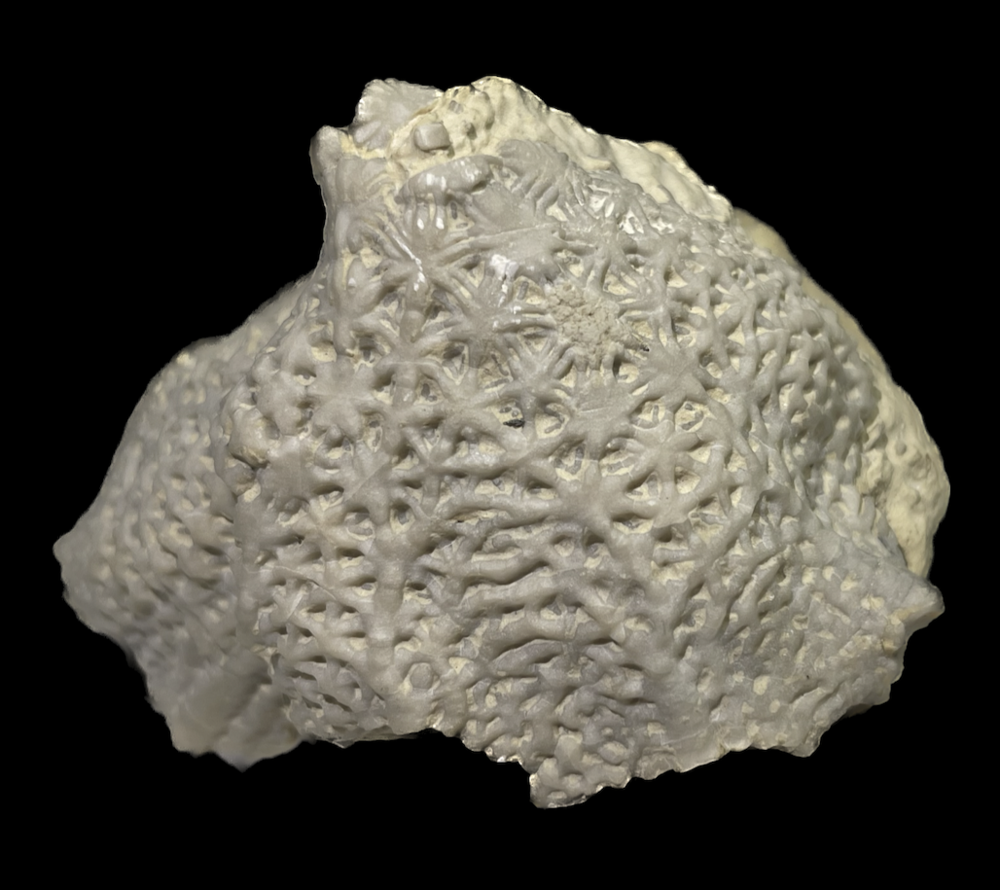

Scyphocrinites cinctus
• Silurian
• Henryhouse Formation, Hunton Group
• Ada, Oklahoma, USA
Size: 6.5 cm across
Scyphocrinites elegans from the Silurian of Morocco is probably the most commonly-seen crinoid on the market these days. It is less widely-known that Scyphocrinites actually also occurs in the Silurian of North America, though they are rare and typically fragmentary. Those from the Henryhouse of Oklahoma such as this specimen are preserved in a lovely porcelain-white. This one shows the extensive web-like calyx ornamentation that also adorns their Moroccan relatives, and even the proximal parts of the arms just before they become free from the calyx.
|

|
Copyright © 2024 by Samuel Kim, all rights reserved